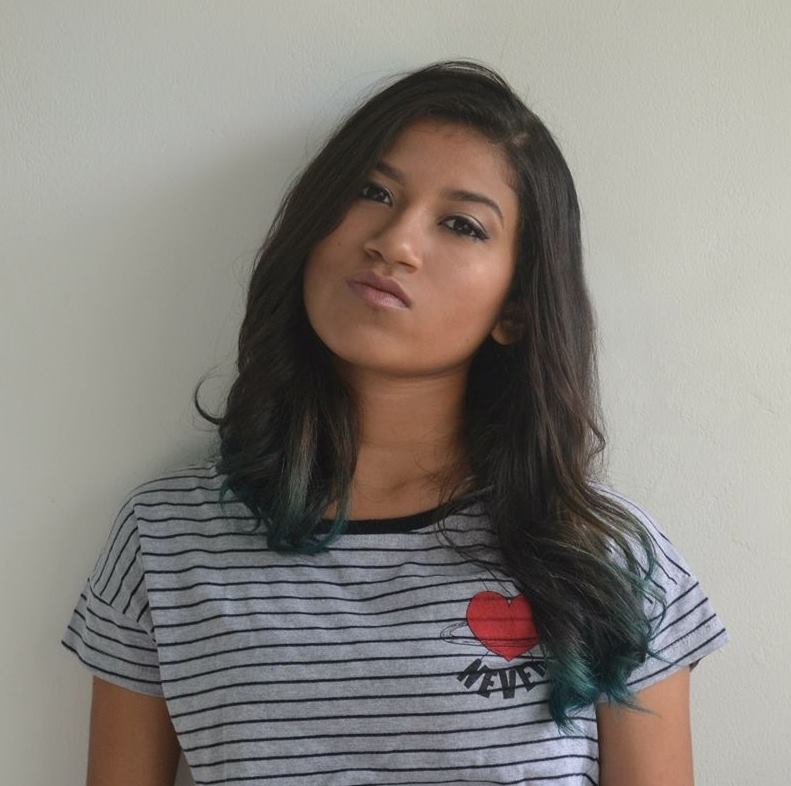
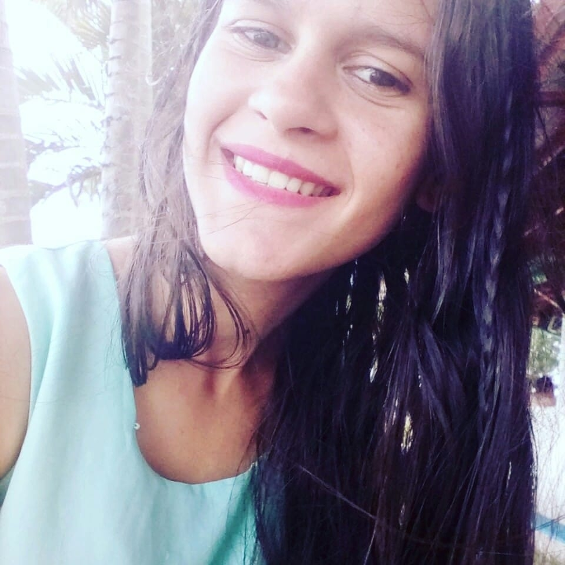

Olá!
O site MULHERES_NA_LUTA é um projeto pensado e desenvolvido pelas alunas Larissa e Vivianny do Instituto Federal de Educação, Ciência e Tecnologia do Rio Grande do Norte - campus Canguaretama. Temos como principal objetivo criar um meio de comunicação, de informação e de interação dentro do movimento de mulheres.
Equipe de desenvolvimento

Larissa Andressa, 19 anos

Vivianny Caroline, 19 anos